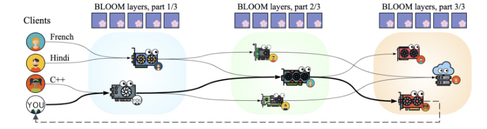

2 · Background
Concepts and fundamentals
- Petals — an open-source platform for collaborative inference and fine-tuning of 100B+ LLMs (BLOOM, Llama, Falcon, Mixtral). It splits a model into blocks hosted by volunteer machines across the network; the client connects to the swarm via the DHT and runs inference by passing activations through the chain of servers. It exposes a drop-in HuggingFace API (AutoDistributedModelForCausalLM) — this project extends exactly the router that sits behind that API.

- Hivemind — a PyTorch library for decentralized deep learning (the Learning@home project): a Kademlia DHT over libp2p, decentralized all-reduce, decentralized MoE, and fault-tolerant optimizers. It is the foundation Petals was built on: it provides the DHT for block discovery and announcement, and the p2p network for the client↔server RPCs.
- Distributed inference via pipeline parallelism — a transformer is cut into consecutive blocks; each node hosts a range. Generating one token requires traversing all blocks in order: per-token latency is the sum of every hop's delay along the route.
- DHT (Distributed Hash Table) — Hivemind runs a Kademlia-style DHT (libp2p) to announce which nodes host which blocks and propagate metrics (ServerInfo: dtype, RPS, free cache, pings).
- KV cache — the generation's attention memory lives on the server; that is why an in-flight session cannot migrate to another node on failure.
- Perplexity and NLL — quality: offline perplexity per (model, precision) on WikiText-2; divergence of generated text from a local fp32 reference.
- Pareto frontier — the set of routes where improving latency is only possible by worsening quality. The α dial traverses it: cost = (1 − α)·latency + α·quality_cost.